14. Thermodynamics#
Oct 28, 2026 | 10889 words | 73 min read
Chapter roadmap
Thermodynamics connects heat transfer and work with changes in a system’s internal energy. It also explains why energy conservation alone cannot tell us which processes occur spontaneously or how efficiently an engine can operate.
As you read, focus on three questions:
How do the system boundary and sign convention determine the energy balance?
How do a process path and reservoir temperatures limit useful work?
How does entropy distinguish reversible processes from irreversible ones?
You will use these ideas to analyze gas cycles, heat engines, heat pumps, and changes in the availability of energy.
Heat transfer is energy in transit and can be used to do work. But it can also be converted into other types of energy. For example, a car engine burns fuel for heat transfer into a gas. Work is done by the gas as it exerts a force through a distance, converting its energy into other forms including
the car’s kinetic or gravitational potential energy,
electrical energy to run the spark plugs, radio, and lights,
back into stored energy in the car’s battery.
Most of the heat transfer produced from burning fuel in the engine does not do work on the gas. Rather the energy is released into the environment as heat, doing no useful work.
14.1. The First Law of Thermodynamics#
If we are interested in how heat transfer is converted into doing work, then we turn to the conservation of energy.
The First law of Thermodynamics
The first law of thermodynamics states that the change in the internal energy equals the net heat transfer into the system minus the net work done by the system. Mathematically, this is given by
which describes the change in the internal energy \(\Delta E_{\rm int}\), the net heat transferred into the system \(Q\) (i.e., sum of all heat transfer into and out of the system), and the net work done by the system \(W\).
The heat and work follow a sign convention given by:
if \(Q > 0\), then there is a net heat transfer into the system,
if \(W > 0\), then there is a net work done by the system.
Positive \(Q\) adds energy to the system and positive \(W\) takes energy from the system. If more energy comes in than is removed, the difference is stored as internal energy. Heat engines are a good example, where heat transfer takes place so they can do work.
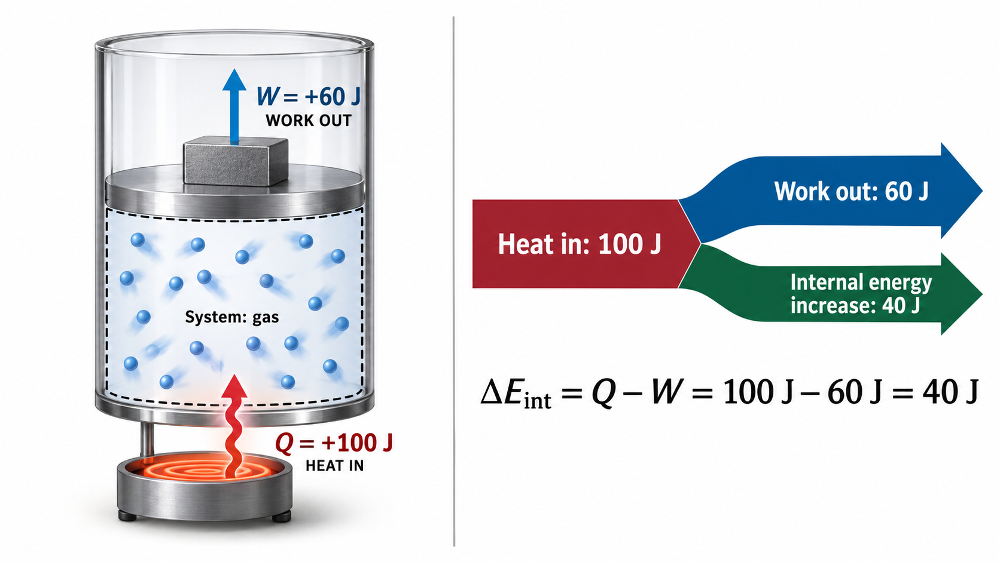
Fig. 14.1 Conservation of energy during gas expansion. In the left panel, \(100\ {\rm J}\) of heat enters the gas, which performs \(60\ {\rm J}\) of work by raising a piston. The dashed boundary identifies the gas as the thermodynamic system, while the heater, piston, and weight belong to the surroundings. The right panel illustrates the energy balance: the heat transferred into the system is divided between the work performed on the surroundings and the increase in internal energy. According to the first law, \(\Delta E_{\rm int}=Q-W=40\ {\rm J}\). In this example, both \(Q\) and \(W\) are positive because heat enters the system and the gas performs work on its surroundings. Adapted from OpenStax, College Physics 2e, Figure 15.3.#
Fig. 14.2 First Law of Thermodynamics (Animation). Heat enters a gas confined beneath a movable piston. As the gas expands, it performs work by lifting a weight. The accompanying energy bars illustrate how an input of \(100\ {\rm J}\) is divided between \(60\ {\rm J}\) of work and a \(40\ {\rm J}\) increase in internal energy. The relationship \(\Delta E_{\rm int}=Q-W\) demonstrates conservation of energy.#
14.1.1. Heat \(Q\) and Work \(W\)#
Heat transfer \(Q\) and doing work \(W\) are the two everyday means of bringing energy into or removing energy from a system. Heat transfer is driven by a temperature difference, where work involves a macroscopic force exerted through a distance. Heat and work produce the same result. For example, both can cause a temperature increase.
Heat transfer into a system can increase the temperature, where work can accomplish the same result. For example, the Sun can warm the air in a tire while pumping air into the tire can warm it as well. Once the temperature increase has occurred, it is impossible to tell which process (heat transfer or doing work) caused the temperature rise. Both processes are energy in transit and both can change the internal energy \(E_{\rm int}\) of a system.
14.1.2. Internal Energy \(E_{\rm int}\)#
The internal energy of a system can be represented in two (but consistent) ways.
The atomic and molecular view at incredibly small scales. The internal energy \(E_{\rm int}\) of a system is the sum of the kinetic and potential energies of its atoms and molecules.
The macroscopic characteristics, which are similar to the atomic and molecular average values. Macroscopically, we define the change in the internal energy \(\Delta E_{\rm int}\) using the first law of thermodynamics.
The internal energy of the system depends only on the state of the system and not how it reached that state. The internal energy is found as a function of a few macroscopic quantities (e.g., pressure, volume, and temperature) independent of past history. This independence means that if we know the state of a system, we can calculate the changes in its internal energy \(E_{\rm int}\) from a few macroscopic variables.
Consider a system going from State 1 to State 2. The system has internal energy \(E_{\rm int}^1\) in State 1 and it has internal energy \(E_{\rm int}^2\) in State 2, no matter how it arrived at either state. The change in internal energy \(\Delta E_{\rm int}\) is path independent (recall doing work in a conservative system).
Why is this independence important?
Note that in the first law of thermodynamics both \(Q\) and \(W\) depend on the path but \(\Delta E_{\rm int}\) does not. This path independence means that internal energy \(E_{\rm int}\) is easier to determine than either heat transfer \(Q\) or work done \(W\).
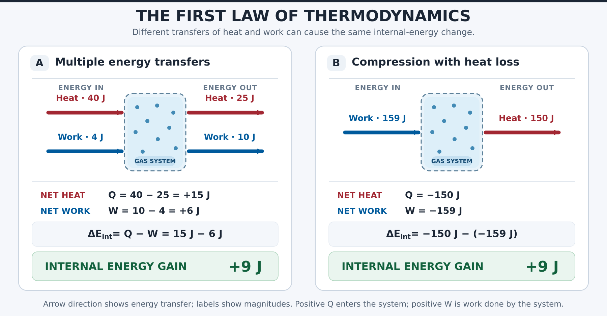
Fig. 14.3 Different Energy Transfers, Same Internal-Energy Change. (a) Heat enters and leaves a gas while work is performed both on and by the system. (b) Work is performed on a gas while heat leaves it. In both cases, the first law of thermodynamics, \(\Delta E_{\rm int}=Q-W\), gives an increase of \(9\ {\rm J}\) in internal energy. Adapted from OpenStax, College Physics 2e, Figure 15.4.#
14.1.3. Human Metabolism and the First Law of Thermodynamics#
Human metabolism is (thermodynamically-speaking) the conversion of food into heat transfer, work, and stored fat. We can use the first law to examine these activities under different conditions ranging from sleep to heavy exercise. What are some of the major characteristics of heat transfer, doing work, and energy in the body?
Body temperature is normally kept constant by heat transfer to the surroundings, which means \(Q < 0\). The body usually does work on the outside world, which means \(W > 0\). In such situations, the body loses internal energy, since the change in internal energy is negative, or
Consider the effects of eating, which increases the internal energy of the body by adding chemical potential energy. The body metabolizes all the food we consume through an oxidation process and the chemical potential energy is released. This implies that food input is the form of work. Food energy is reported using the Calorie (or \(\rm kcal\)). This energy is measured by burning food in a calorimeter.
Note
A chemist or biochemist will use the unit calorie, which measures the energy (or heat transfer) needed to raise the temperature of \(1\ {\rm g}\) of pure water by \(1^\circ{\rm C}\). Nutritionists use the Calorie, which has a similar definition but uses the energy to raise \(1\ {\rm kg}\) of pure water by \(1^\circ{\rm C}\). As a result the dietary Calorie is equal to \(1\ {\rm kcal}\) (i.e., the chemist’s calorie).
Consider the internal energy the body has lost. There are three places this internal energy can go:
to heat transfer,
to doing work, and
to stored fat.
Heat transfer and doing work take energy out of the body, where food puts it back in. If you eat just the right amount of food, then your average internal energy remains constant. Whatever you lose to heat transfer and doing work is replaced by food, where you achieve equilibrium and \(\Delta E_{\rm int} = 0\).
If you overeat repeatedly (or otherwise have a hormonal imbalance), then \(\Delta E_{\rm int}\) is always positive, and your body stores this extra internal energy as fat. The reverse is true if you eat too little or have a hormonal imbalance (in the opposite direction). If \(\Delta E_{\rm int}\) is negative for a few days, then the body metabolizes its own fat to maintain body temperature and do work that takes energy from the body. This thermodynamic process is responsible for how dieting can produce weight loss.
The body stores fat or metabolizes it only if energy intake changes for a period of several days. Your basal metabolic rate (BMR) is the rate at which food is converted into heat transfer and work done while the body is at complete rest. The body adjusts its BMR to partially compensate for over- or under-eating. The body will decrease the metabolic rate rather than eliminate its own fat to replace lost food intake. As a result, the next diet (after a major one) is less successful because your body alters the way it responds to low energy intake. You will chill more easily and feel less energetic as a result of the lower metabolic rate.
Exercise helps to lose weight because it produces both heat transfer from your body and work, which raises your metabolic rate even when you are at rest. Weight loss is also aided by the quite low efficiency of the body in converting internal energy to work, so that the loss of internal energy resulting from doing work is much greater than the work done.
The body provides us with an excellent indication that many thermodynamic processes are irreversible. An irreversible process can only go in one direction under a given set of conditions. For example, body fat can be converted to do work and produce heat transfer, but heat transfer and doing work cannot be converted into stored fat. Otherwise we could skip lunch by sunning ourselves outside (like a lizard or plant) or by walking down stairs.
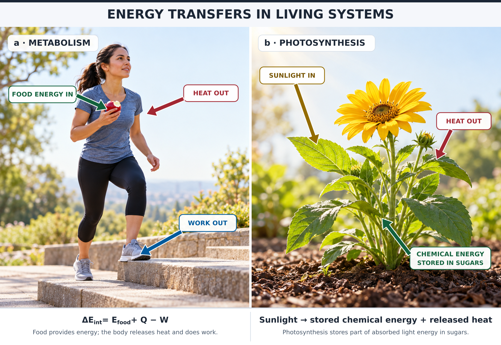
Fig. 14.4 Energy transformations in living systems through metabolism and photosynthesis. (a) The human body obtains chemical energy from food (green), which can be used to perform mechanical work (blue), such as climbing stairs, or transferred to the surroundings as heat (red). The first law of thermodynamics accounts for these energy transfers and any resulting change in the body’s internal energy. (b) During photosynthesis, plants absorb energy from sunlight (gold) and convert some of it into chemical energy stored in sugars (green). Some of the absorbed energy is also transferred to the surroundings as heat (red). Both processes illustrate the conservation of energy: energy is transformed or transferred rather than created or destroyed. Adapted from OpenStax, College Physics 2e, Figure 15.5.#
Term |
Definition |
|---|---|
\(E_{\rm int}\) |
Internal energy—the sum of the kinetic and potential energies of a system’s atoms and molecules. Can be divided into many subcategories, such as thermal and chemical energy. Depends only on the state of a system (such as its \(P\), \(V\), and \(T\)), not on how the energy entered the system. Change in internal energy is path independent. |
\(Q\) |
Heat—energy transferred because of a temperature difference. Characterized by random molecular motion. Highly dependent on path. \(Q\) entering a system is positive. |
\(W\) |
Work—energy transferred by a force moving through a distance. An organized, orderly process. Path dependent. \(W\) done by a system (either against an external force or to increase the volume of the system) is positive. |
14.1.4. Example Problem: Internal Energy Along Two Paths#
Example Problem: Internal Energy Along Two Paths
The Problem
(a) A system absorbs \(40\ {\rm J}\) of heat and does \(10\ {\rm J}\) of work. It then releases \(25\ {\rm J}\) of heat while its surroundings do \(4\ {\rm J}\) of work on it. Find the total change in internal energy. (b) In a different process, a system releases \(150\ {\rm J}\) of heat while its surroundings do \(159\ {\rm J}\) of work on it. Find its change in internal energy. Treat all energy inputs as specified to the nearest joule.
Show worked solution
The Model
We treat the material receiving heat and work as the system and apply the first law over each complete process. Heat entering the system is positive, and work done by the system is positive. Work done on the system therefore enters with a negative sign in the work term. Adding the transfers before applying the first law allows us to compare the internal-energy changes without assuming that the separate heat and work transfers are the same.
The Math
(a) The net heat transfer is the heat absorbed minus the heat released, and the net work is the work done by the system minus the work done on it. Using positive magnitudes for these individual transfers gives the energy balance
The specified transfers therefore produce the internal-energy change
(b) Heat leaves the system and work enters it, so the same sign convention gives
Substituting the transfers for this process gives
The Conclusion
The internal energy increases by \(9\ {\rm J}\) in each process. The positive signs are reasonable because the combined energy entering exceeds the energy leaving. Different heat and work transfers can produce the same internal-energy change; this alone does not establish that every other state variable is identical.
Adapted from OpenStax, College Physics 2e, Example 15.1.
14.2. Simple Processes of the First Law of Thermodynamics#
We are interested in heat transfer because it is used to do work for us. Such devices that do work using heat are called heat engines. Car engines and steam turbines that generate electricity are examples of heat engines.
![Two-panel illustration of a heat engine. Panel (a) shows a realistic piston-cylinder assembly heated by a burner beneath the cylinder. The heated gas expands, pushing the piston and turning a flywheel, while an exhaust pipe releases hot gases upward. Panel (b) shows a simplified heat-engine diagram. Red arrows indicate heat entering from below and leaving above, while a blue arrow represents mechanical work produced by the engine. The equations show that the change in internal energy over a complete cycle is zero and that work output equals heat input minus heat rejected.](../_images/heat_engine_piston_two_panel.png)
Fig. 14.5 Energy transfers in a heat engine. (a) A burner transfers heat to gas inside a cylinder, increasing its temperature and pressure. As the gas expands, it pushes the piston, which transfers mechanical energy through a connecting rod to turn the flywheel. The exhaust pipe illustrates how hot gases carry energy away from the engine. (b) The simplified model represents the energy transfers over a complete engine cycle. Heat enters the engine from below (\(Q_{\rm in}\), red arrow), while some energy is rejected to the surroundings (\(Q_{\rm out}\), red arrow). The remaining energy is converted into useful mechanical work (\(W\), blue arrow). Because the engine returns to its initial state after each complete cycle, its net change in internal energy is zero, giving \(W=Q_{\rm in}-Q_{\rm out}\). Adapted from OpenStax, College Physics 2e, Figures 15.7 and 15.8.#
Fuel combustion produces heat transfer to a gas in a cylinder, which increases the pressure of the gas and thereby the force it exerts on a movable piston.
The gas does work on the outside world, as this force moves the piston through some distance.
Heat transfer to the gas cylinder results in work being done. To repeat this process, the piston needs to return to its starting position.
Heat transfer occurs from the gas to the surroundings so that its pressure decreases, and force is exerted by the surroundings to push the piston back through some distance.
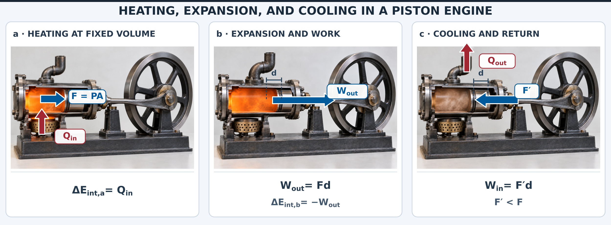
Fig. 14.6 Heat transfer and mechanical work in a simplified piston-engine cycle. (a) Heat transfer \(Q_{\rm in}\) increases the internal energy of the gas while the piston remains stationary, raising its temperature and pressure. The gas exerts a force \(F=PA\) on the piston, where \(P\) is the pressure and \(A\) is the piston’s cross-sectional area. (b) The expanding gas pushes the piston through a distance \(d\), performing work \(W_{\rm out}=Fd\) on its surroundings. Assuming no additional heat transfer during this expansion, the work comes from the gas’s internal energy, causing its temperature and pressure to decrease. (c) Heat transfer \(Q_{\rm out}\) removes additional energy from the gas, further reducing its pressure. Consequently, a smaller opposing force \(F'<F\) can return the piston to its initial position, requiring an input of work \(W_{\rm in}=F'd\). Red arrows indicate heat transfer into or out of the system, while blue arrows indicate mechanical forces and work. Adapted from OpenStax, College Physics 2e, Figure 15.8.#
14.2.1. \(PV\) Diagrams and their Relationship to Work Done on or by a Gas#
An isobaric process is one where a gas does work on a piston at constant pressure. The force exerted is constant and the work done is given as
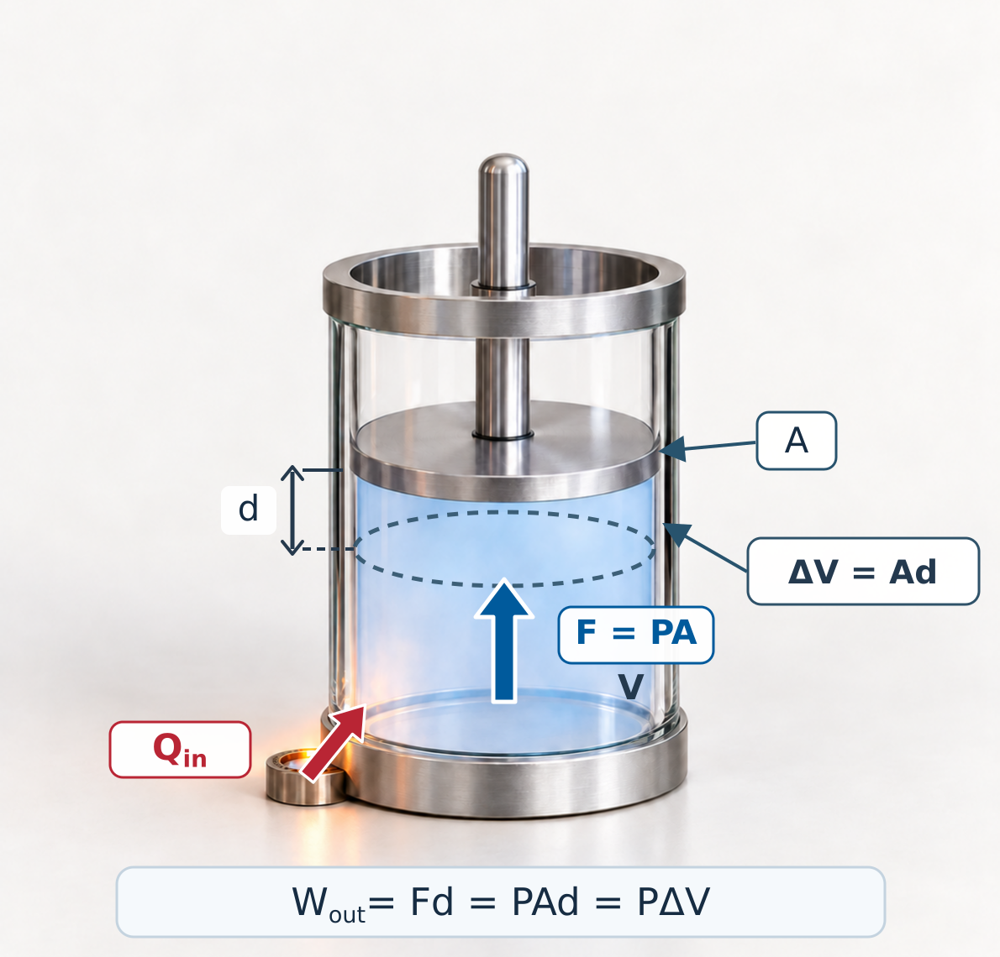
Fig. 14.7 Work done by a gas during isobaric expansion. Heat transfer \(Q_{\rm in}\) increases the internal energy of the gas, allowing it to expand while maintaining a constant pressure. The gas exerts an upward force \(F=PA\) on the piston, where \(P\) is the gas pressure and \(A\) is the piston’s cross-sectional area. As the piston moves upward through a distance \(d\), its initial position (dashed ellipse) and final position define a change in volume \(\Delta V=Ad\). The work performed by the expanding gas is therefore \(W_{\rm out}=Fd=PAd=P\Delta V\). The red arrow represents heat entering the system, while the blue arrow represents the upward force exerted by the gas on the piston. Adapted from OpenStax, College Physics 2e, Figure 15.9.#
Because the volume of a cylinder is its cross-sectional area \(A\) times its length \(d\), we see that \(Ad = \Delta V\), the change in volume. If \(\Delta V > 0\), then \(W>0\) which means that work is done by the gas on the outside world.
Note
Many texts use a different definition of work, where it is defined as the work against the external pressure \(P_{\rm ext}\), where the above definition of \(P\) describes the internal pressure. Under this alternate definition, we have
for an isobaric process. This changes the definition of the First Law of Thermodynamics by reversing the sign conventions for work resulting in
Recall from our treatment of fluids that pressure is a type of energy per unit volume and that pressure has units of energy divided by volume. Also the ideal gas law has \(PV\), which has units of energy.
A \(PV\) diagram illustrates an isobaric process as a horizontal line because the pressure is constant while the volume changes. The work done is the area under the curve, which is generally applicable regardless if the pressure is constant.
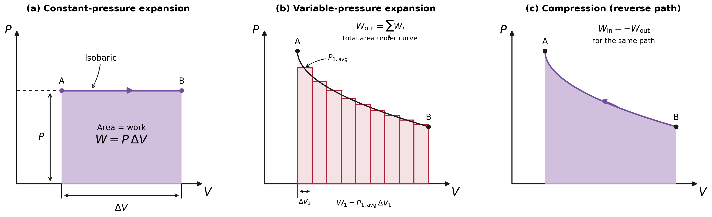
Fig. 14.8 Work done by or on a gas can be determined from the area under a pressure-volume (\(PV\)) curve. (a) For an isobaric process, pressure remains constant as the gas expands from A to B, and the work done by the gas is \(W=P\Delta V\). (b) When pressure varies with volume, the work done during expansion is the sum of the contributions from small volume intervals, \(W_{\rm out}=\sum_i P_{i,\rm ave}\Delta V_i\), approaching the total area under the curve as the intervals become smaller. (c) Reversing the process from B to A corresponds to compression, for which the work done by the gas is negative, \(W_{\rm in}=-W_{\rm out}\), for the same path. Combined and adapted from: OpenStax, College Physics 2e, Figures 15.10 and 15.11. The original isobaric diagram (Figure 15.10) and the two variable-pressure diagrams (Figure 15.11a,b) have been redrawn and arranged into a single three-panel figure.#
Work is also the area under the curve for a general process where both pressure and volume change. We can approximate the area under the curve for a more complicated change in pressure by dividing it into vertical strips, each having an average constant pressure \(P_{i({\rm ave})}\). The work done by an individual strip is given by
and the total work done is the sum of \(W_i\), or \(W = \sum W_i\). The total work is the total area under the curve. If the path is reversed, then work is done on the system (instead of by the system) as denoted by a negative area because \(\Delta V <0 \).
\(PV\) diagrams clearly illustrate that the work done depends on the path taken and not just the endpoints. The vertical paths on a \(PV\) diagram are called isochoric processes where the volume is constant \(\Delta V = 0\) and no work is done (i.e., similar to no displacement). If the system follows a cyclical path, then the work done is the area inside the loop. In general, the work done is the area inside a (square) loop on a \(PV\) diagram. When the loop is traversed in the clockwise direction, then the work is positive, or a net work output.
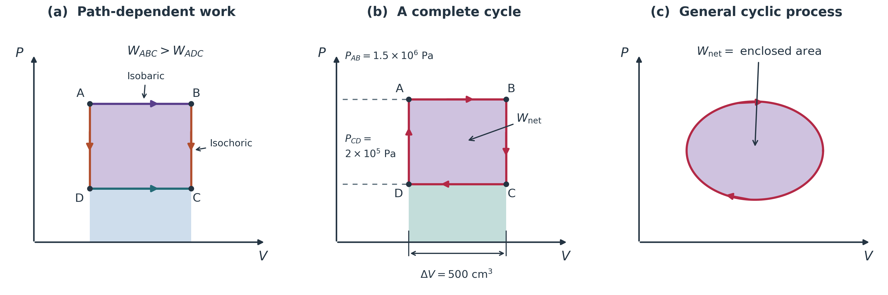
Fig. 14.9 Work done by a gas during thermodynamic processes. The work performed by a gas depends on the path followed on a pressure-volume (\(PV\)) diagram. (a) Two different paths connect states A and C. Along path ABC, the gas expands at a higher pressure than along path ADC, so \(W_{ABC}>W_{ADC}\). Horizontal segments represent isobaric processes (constant pressure), while vertical segments represent isochoric processes (constant volume), during which no work is performed. (b) A clockwise rectangular cycle illustrates expansion at a higher pressure followed by compression at a lower pressure. The net work performed by the gas is positive and equals the shaded area enclosed by the cycle. (c) For a general cyclic process, the net work is also equal to the area enclosed by the \(PV\) curve. A clockwise cycle produces positive net work, while a counterclockwise cycle requires net work to be done on the gas. Adapted from OpenStax, College Physics 2e, Figure 15.12.#
A \(PV\) diagram can show two other important processes: isothermal and adiabatic processes. An isothermal process is one in which the temperature is kept constant. If the gas behaves like an ideal gas and if no phase change occurs, then \(PV = nRT\). For an isothermal process, \(PV = \text{constant}\) since the temperature \(T\) is constant. Normally, we expect the temperature of a gas to decrease as it expands and suspect that heat transfer must occur from the surroundings to the gas to keep the temperature constant during an isothermal expansion.
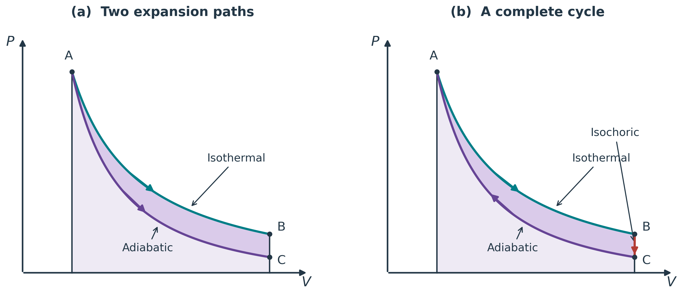
Fig. 14.10 Comparison of isothermal and adiabatic processes on pressure–volume diagrams. (a) A gas expands from state A along two possible paths. During isothermal expansion (teal curve), the temperature remains constant as heat enters the gas, allowing it to reach state B. During adiabatic expansion (purple curve), no heat is exchanged, so the temperature decreases and the gas reaches state C at a lower pressure. The area under each curve represents the work performed by the gas during expansion. (b) The gas undergoes a complete thermodynamic cycle consisting of isothermal expansion from A to B, isochoric cooling from B to C, and adiabatic compression from C back to A. The net work performed by the gas equals the shaded area enclosed between the two curves. Adapted from OpenStax, College Physics 2e, Figure 15.14.#
Consider the special case of a monatomic (single element) ideal gas, where we know that the average kinetic energy of an atom in such a gas is given by
from kinetic theory. The kinetic energy of the atoms in a monatomic ideal gas is its only form of internal energy, and so the internal energy \(E_{\rm int}\) is
where \(N\) is the number of atoms in the gas. This relationship means that the internal energy of an ideal monatomic gas is constant during an isothermal process (i.e., \(\Delta E_{\rm int} = 0\)). If the internal energy does not change, then the net heat transfer into the gas must equal the net work done by the gas. Mathematically we have
We have just enough heat transfer to replace the work done. An isothermal process is inherently slow because heat transfer occurs continuously to keep the gas temperature constant at all times and must be allowed to spread through the gas so that there are no hot or cold regions.
An adiabatic process is one in which there is no heat transfer (i.e., \(Q=0\)). Processes that are nearly adiabatic can be achieved either by using very effective insulation or by performing the process so fast that there is little time for heat transfer. Temperature must decrease during an adiabatic process, since work is done at the expense of internal energy:
Since there is no heat transfer (\(Q=0\)), this means that the change in the internal energy is the negative of the work (\(\Delta E_{\rm int}=-W\)) for an adiabatic process. Lower temperature results in lower pressure along the way. Figure 14.10 shows this by the AC curve, where it is lower than the curve AB and less work is done. If a full cycle is achieved (e.g., ABCA), where the gas follows an isothermal, isochoric, and adiabatic process, then there would be a net work output (i.e., closed loop).
14.2.2. Reversible Processes#
Both isothermal and adiabatic processes are reversible, in principle. A reversible process is one in which both the system and its environment can return to exactly the states they were in by following the reverse path. The reverse isothermal and adiabatic paths in Fig. 14.10 are BA and CA, respectively. Real macroscopic processes are never exactly reversible.
For a piston-cylinder system, the system is the gas while the environment is the piston, cylinder, and the rest of the universe. If there are any energy-dissipating mechanisms (e.g., friction or turbulence) then heat transfer to the environment occurs for either direction of the piston. If the path BA is followed and there is friction, then the gas will be returned to its original state, but the environment will not. The environment will have been heated in both directions. Reversibility requires the direction of heat transfer to reverse for the reverse path. Since dissipative mechanisms cannot be completely eliminated, real processes cannot be reversible.
There must be reasons that real macroscopic processes cannot be reversible. Heat transfer occurs spontaneously from hot to cold, and never spontaneously in the reverse. It would not violate the first law of thermodynamics for this to happen. All spontaneous processes (e.g., bubbles bursting) never go in reverse. There is a second law of thermodynamics that forbids them from going in reverse.
Isobaric |
Constant pressure: \(W = P\Delta V\). |
Isochoric |
Constant volume: \(W = 0\). |
Isothermal |
Constant temperature: \(Q = W\). |
Adiabatic |
No heat transfer: \(Q = 0\). |
14.2.3. Example Problem: Work Around a Rectangular Gas Cycle#
Example Problem: Work Around a Rectangular Gas Cycle
The Problem
A gas follows the clockwise rectangular cycle ABCDA in panel (b) of the figure below. It expands along AB at \(1.50\times10^6\ {\rm Pa}\) through a volume increase of \(5.00\times10^{-4}\ {\rm m^3}\), cools at constant volume along BC, compresses along CD at \(2.00\times10^5\ {\rm Pa}\) to its original volume, and returns to A at constant volume. (a) Find the work on each leg and the net work done by the gas. (b) Verify the net work using the enclosed area. Use three significant figures.
Fig. 14.11 Paths and work on a pressure–volume diagram. Panel (b) supplies the rectangular cycle; horizontal legs change volume, while vertical legs keep volume fixed. Source: OpenStax, College Physics 2e, Figure 15.12.#
Show worked solution
The Model
The gas is the system, and work done by the gas is positive. Only the horizontal legs contribute pressure-volume work because the piston does not move during either constant-volume leg. Expansion occurs at the higher pressure and compression at the lower pressure, so we expect a positive net work output. The area of the rectangle provides an independent geometric way to evaluate that output.
The Math
(a) We denote the upper and lower pressures by \(P_{\rm H}\) and \(P_{\rm L}\) and the positive volume increase by \(\Delta V\). Constant-pressure work then gives
The two vertical legs have no volume change, so \(W_{BC}=W_{DA}=0\). Adding all four contributions gives
The given pressures and volume interval determine the nonzero contributions as
Their sum is the net work done in one cycle,
(b) The rectangle’s height is the pressure difference and its width is the volume interval, so its area represents the work
Evaluating this area independently gives
The Conclusion
Both methods give \(6.50\times10^2\ {\rm J}\) of net work done by the gas per cycle. The positive result agrees with the clockwise direction: expansion at high pressure delivers more work than compression at low pressure requires. Pressure times volume has units of joules, as required.
Adapted from OpenStax, College Physics 2e, Example 15.2.
14.3. Introduction to the Second Law of Thermodynamics#
The second law of thermodynamics deals with the direction taken by spontaneous processes. Many processes occur spontaneously in one direction only (i.e., they are irreversible). Although irreversibility is seen in day-to-day life (e.g., broken glass does not become unbroken spontaneously), complete irreversibility is a statistical statement that cannot be seen during the lifetime of the universe. An irreversible process is one that depends on the path.
If the process can go only in one direction, then the reverse path differs fundamentally and the process cannot be reversible. For example, heat involves the transfer of energy from higher to lower temperature. A cold object in contact with a hot one never gets colder, which would require transferring heat to the hot object and making it hotter. Kinetic energy can be completely converted into thermal energy by friction, but the reverse is impossible. The expansion of a puff of gas introduced into one corner of a vacuum chamber expands to fill the chamber. It never regroups in the corner. The random motion of the gas molecules could take them back to the corner, but this is never observed to happen.
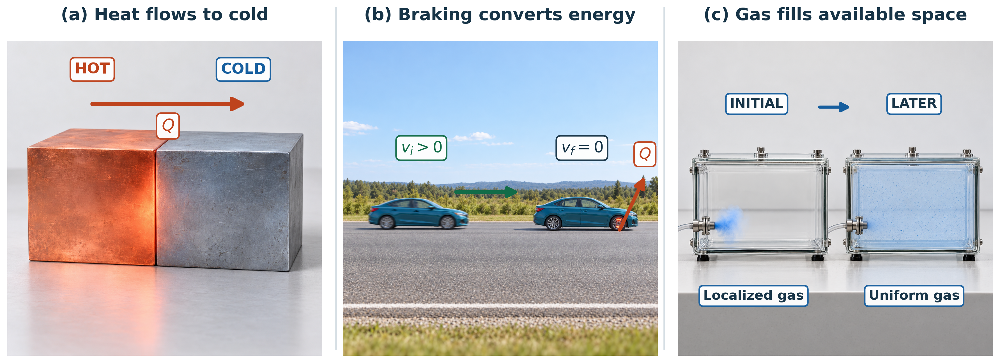
Fig. 14.12 Examples of irreversible thermodynamic processes. (a) Heat transfers spontaneously from a hotter object to a colder object when they are in thermal contact. The arrow indicates the direction of heat transfer, \(Q\), from hot to cold. (b) A moving car slows to a stop as friction in its brakes converts kinetic energy into thermal energy. The brakes become warmer, and heat is subsequently transferred to the surroundings. The reverse process, in which thermal energy spontaneously causes the stationary car to accelerate, does not occur. (c) A localized puff of gas released into an evacuated chamber spontaneously expands until the gas becomes approximately uniformly distributed throughout the available volume. Although the molecules continue moving randomly, they do not spontaneously regroup in their original location. These examples illustrate processes that naturally proceed in one direction, consistent with the second law of thermodynamics. Adapted from OpenStax, College Physics 2e, Figure 15.16.#
The Second Law of Thermodynamics
First Expression
Heat transfer occurs spontaneously from higher- to lower-temperature bodies but never spontaneously in the reverse direction.
Second Expression
It is impossible in any system for heat transfer from a reservoir to completely convert to work in a cyclical process in which the system returns to its initial state.
14.3.1. Heat Engines#
Consider a device that uses heat transfer to do work, which is called a heat engine. Heat transfer from the hot object (or hot reservoir) is denoted as \(Q_{\rm h}\), while heat transfer into the cold object (or cold reservoir) is \(Q_{\rm c}\), and the work done by the engine is \(W\). The temperatures of the hot and cold reservoirs are \(T_{\rm h}\) and \(T_{\rm c}\), respectively.
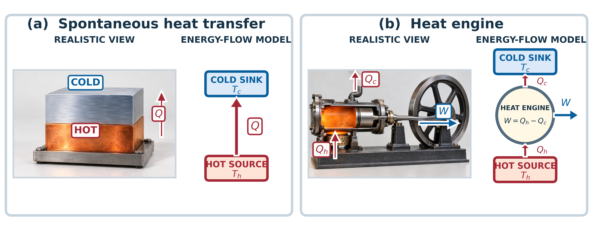
Fig. 14.13 Spontaneous heat transfer and the operation of a heat engine. (a) Thermal energy naturally transfers from a hot reservoir at temperature \(T_h\) to a colder reservoir at temperature \(T_c\), as indicated by the upward arrow \(Q\). The reverse transfer does not occur spontaneously. (b) A heat engine uses part of the thermal energy received from a hot reservoir to perform mechanical work. Heat input \(Q_h\) enters the engine from below, while some energy is rejected to the colder surroundings as \(Q_c\) through the upper exhaust. The remaining energy is converted into useful work \(W\). For a complete thermodynamic cycle, conservation of energy gives \(W=Q_h-Q_c\). The simplified diagrams illustrate the direction of energy transfer, with red arrows representing heat transfer and blue arrows representing mechanical work. Adapted from OpenStax, College Physics 2e, Figure 15.16.#
Because the hot reservoir is heated externally, it is important that the work is done as efficiently as possible. We would like \(W\) to equal \(Q_{\rm h}\) and there to be no heat transfer to the environment (i.e., \(Q_{\rm c}=0\)). Unfortunately, this is impossible due to the second law of thermodynamics.
A cyclical process brings a system (e.g., gas in a cylinder) back to its original state at the end of every cycle. Most heat engines use cyclical processes, such as reciprocating piston engines and rotating turbines. The second law of thermodynamics clearly states that such engines cannot have perfect conversion of heat transfer into work done.
We can show the conditions for a cyclical process in terms of \(W\), \(Q_{\rm h}\), and \(Q_{\rm c}\). If the system returns to its initial state, then the change in the internal energy is zero, \(\Delta E_{\rm int}=0\). From the first law of thermodynamics, we have
where \(Q\) is the net heat transfer during the cycle (\(Q = Q_{\rm h}-Q_{\rm c}\)) and \(W\) is the net work done by the system. Since \(\Delta E_{\rm int} = 0\) for a complete cycle, we have
Then the net work done by the system equals the net heat transfer into the system, or
In the conversion of energy to work, we are faced with the problem of getting less out than we put in. We define the conversion efficiency \(\eta\) as the ratio of useful work output \(W\) to the energy input \(Q_{\rm h}\), or
Since \(W = Q_{\rm h} - Q_{\rm c}\) in a cyclical process, we can also express this as
which shows that an efficiency of \(\eta = 1\) (or \(100\%\)) is possible only if there is no heat transfer to the environment or \(Q_{\rm c}=0\). Note that \(Q_{\rm h}>0\) and \(Q_{\rm c} >0\). The direction of the heat transfer is indicated by a plus or minus sign.
The Otto cycle is used in four-stroke internal combustion engines (ICEs), although the true Otto-cycle paths do not correspond exactly to the strokes of the engine.
The adiabatic process AB corresponds to the nearly adiabatic compression stroke of the gasoline engine. In both cases, work is done on the system (i.e., the gas mixture in the cylinder), increasing its temperature and pressure.
Along the path BC, heat transfer \(Q_{\rm h}\) into the gas occurs at constant volume, causing a further increase in pressure and temperature. This process corresponds to burning fuel in an ICE, and takes place so rapidly that the volume is nearly constant.
Path CD is an adiabatic expansion that does work on the outside world, just as the power stroke of an ICE does in an adiabatic expansion. The work done by the system along the path CD is greater than the work done on the system along path AB because the pressure is greater, and so there is a net work output.
Along path DA, the heat transfer \(Q_{\rm c}\) from the gas at constant volume reduces its temperature and pressure, returning it to its original state. In an ICE, this process corresponds to the exhaust of hot gases and the intake of an air gasoline mixture at considerably lower temperature.
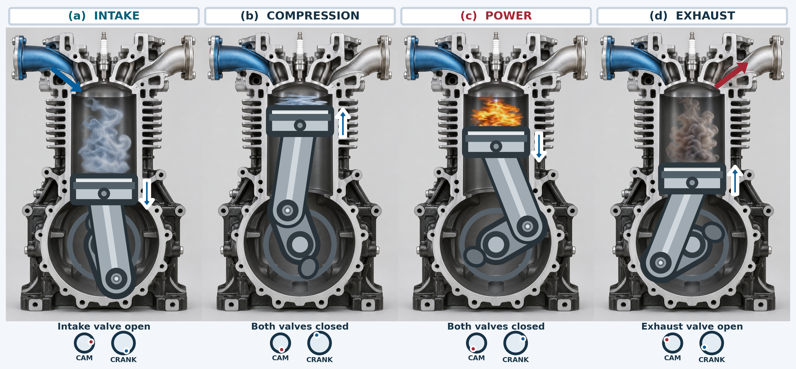
Fig. 14.14 The four strokes of a gasoline engine. (a) During intake, the piston moves downward while the intake valve is open, drawing an air–fuel mixture into the cylinder. (b) During compression, the piston rises with both valves closed, compressing the mixture in a nearly adiabatic process. (c) A spark ignites the mixture, raising its pressure and driving the piston downward during the power stroke. (d) During exhaust, the piston rises with the exhaust valve open, expelling the burned gases. The piston is connected to the rotating crankshaft by a fixed-length connecting rod. The timing indicators below the panels show that the camshaft completes one revolution for every two crankshaft revolutions. Adapted from OpenStax, College Physics 2e, Figure 15.17.#
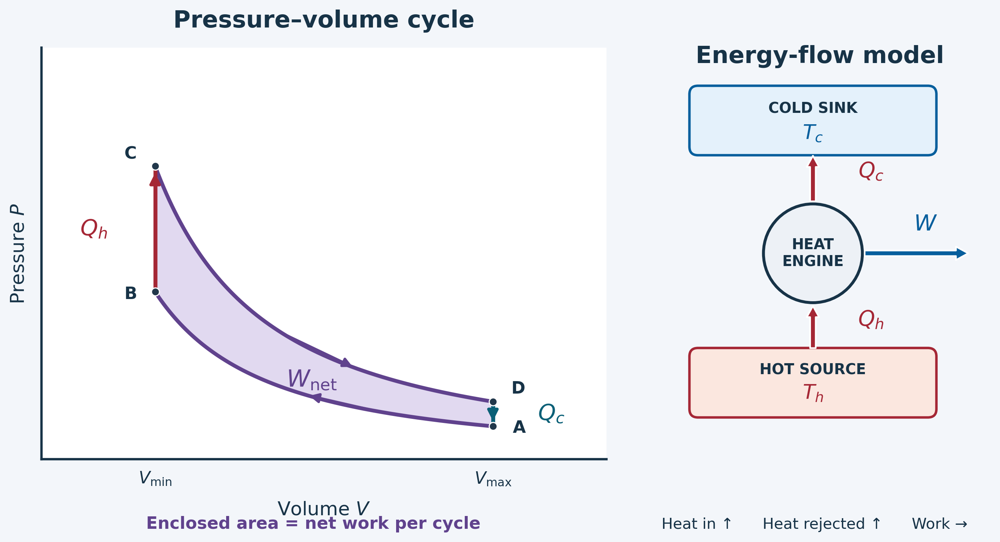
Fig. 14.15 Pressure–volume diagram of an idealized Otto cycle. Along path \(A\rightarrow B\), the gas is compressed adiabatically, increasing its pressure and temperature. Heat \(Q_h\) is added at constant volume along \(B\rightarrow C\), increasing the pressure further. The gas then expands adiabatically along \(C\rightarrow D\), performing work on the piston. Finally, heat \(Q_c\) is rejected at constant volume along \(D\rightarrow A\), returning the gas to its initial state. The shaded area enclosed by the cycle represents the net work \(W_{\rm net}\) produced per cycle. In the simplified energy-flow model, heat enters from the hot source below, some energy is converted into useful work, and the remaining heat flows upward to the cold sink. Adapted from OpenStax, College Physics 2e, Figure 15.18.#
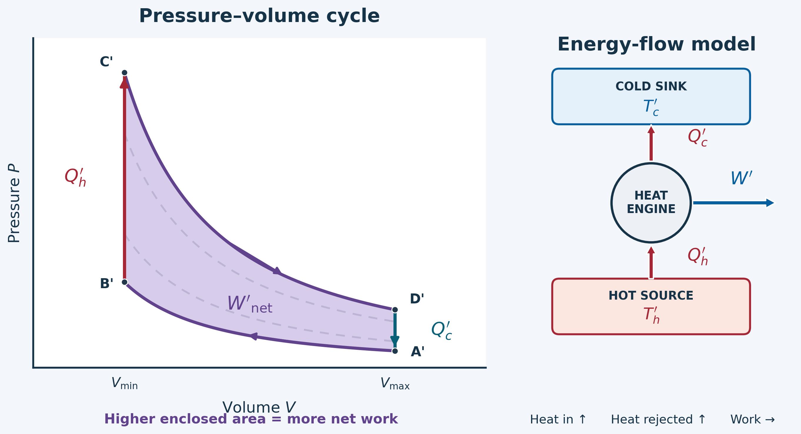
Fig. 14.16 Increasing the net work produced by an Otto cycle. The solid curves represent a cycle with a higher peak pressure during expansion and a lower pressure at the beginning of compression. The dashed curves show the original cycle for comparison. Because the solid curve encloses a larger area on the \(PV\) diagram, the modified cycle produces more net work, \(W'\), during each complete cycle. The accompanying energy-flow model shows heat \(Q'_h\) entering from the hot source below, heat \(Q'_c\) leaving toward the cold sink above, and work \(W'\) delivered to the surroundings. The increased area demonstrates greater work output, although it does not by itself establish a higher thermal efficiency. Adapted from OpenStax, College Physics 2e, Figure 15.19.#
The net work done by a cyclical process is the area inside the closed path on a \(PV\) diagram, such as ABCDA. It is necessary for heat transfer from the system to occur to get a net work output for a cyclical process. In the Otto cycle, heat transfer occurs along path DA. If no heat transfer occurs, then the return path is the same, and the net work output is zero. The lower the temperature on the path AB, the less work has to be done to compress the gas.
The area inside the closed path is then greater, and so the engine does more work and is thus more efficient. The higher the temperature along path CD, the more work output there is (see Figure 14.16). So efficiency is related to the temperatures of the hot and cold reservoirs.
14.3.2. Example Problem: Coal-Plant Energy Balance and Emissions#
Example Problem: Coal-Plant Energy Balance and Emissions
The Problem
During one day, a model coal-fired plant receives \(2.50\times10^{14}\ {\rm J}\) of heat and releases \(1.48\times10^{14}\ {\rm J}\) to its surroundings. (a) Find its useful work output. (b) Find its thermal efficiency. (c) For comparison with the textbook calculation, assume a fuel heating value of \(2.5\times10^6\ {\rm J/kg}\) and approximate the fuel as pure carbon that burns completely to carbon dioxide. Use a carbon-to-carbon-dioxide mass ratio of \(12:44\) to estimate the daily carbon dioxide output. These are stipulated model inputs, not current plant-performance or fuel-composition data.
Show worked solution
The Model
We model the plant’s working fluid as completing cycles with no net accumulation of internal energy over the day. The heat received must be divided between useful work and heat rejected. For the emissions estimate, the heat input determines how much fuel is consumed, and the reaction’s mass ratio converts that fuel mass to carbon dioxide mass. This simplified chemical model includes the oxygen incorporated from the air.
The Math
(a) The first law for a complete cycle makes the useful work equal to the difference between the positive heat-transfer magnitudes,
The daily transfers therefore give
(b) Thermal efficiency is the fraction of heat input converted into useful work. Combining that definition with the cyclic energy balance gives
Using the specified transfers gives
(c) If \(H\) is the stipulated heating value, the fuel mass is \(m_{\rm fuel}=Q_{\rm h}/H\). Complete combustion in the pure-carbon model therefore produces
The two-significant-figure heating value limits the precision of the resulting emissions estimate,
The Conclusion
The model plant delivers \(1.02\times10^{14}\ {\rm J}\) of work per day at \(40.8\%\) efficiency. Its stipulated fuel model gives \(3.7\times10^8\ {\rm kg}\) of carbon dioxide per day. The efficiency is below unity, and the exhaust mass exceeds the fuel mass because oxygen is added. The unusually low stipulated heating value makes the emissions estimate unusually large; it should not be treated as a representative modern coal-plant value.
Adapted from OpenStax, College Physics 2e, Example 15.3.
14.4. Carnot’s Heat Engine, Heat Pumps, and Refrigerators#
We know from the second law of thermodynamics that a heat engine cannot be \(100\%\) efficient, since there must always be some heat transfer \(Q_{\rm c}\) to the environment (i.e., waste heat). How efficient can a heat engine be?
A young French engineer, Sadi Carnot, answered this question at a theoretical level. He devised a theoretical cycle (called a Carnot cycle) which is the most efficient cyclical process possible. Any heat engine employing the Carnot cycle is called a Carnot engine.
What is crucial to the Carnot cycle is that only reversible processes are used. Irreversible processes (e.g., friction and turbulence) increase heat transfer \(Q_{\rm c}\) to the environment and reduce the efficiency of the engine.
Carnot Engine
Stated in terms of reversible processes, the second law of thermodynamics has a third form:
A Carnot engine operating between two given temperatures has the greatest possible efficiency of any heat engine operating between these two temperatures. Furthermore, all engines employing only reversible processes have the same maximum efficiency when operating between the same given temperatures.
The Carnot cycle comprises two isothermal and two adiabatic processes on a \(PV\) diagram. Recall that both isothermal and adiabatic processes are reversible, in principle. Carnot also determined the efficiency of a perfect heat engine. It is always true that the efficiency of a cyclical heat engine is given by:
Carnot found that for a perfect heat engine, the ratio \(Q_{\rm c}/Q_{\rm h}\) equals the ratio of the absolute temperatures of the heat reservoirs. Then the maximum Carnot efficiency \(\eta_{\rm C}\) is given by
where \(T_{\rm h}\) and \(T_{\rm c}\) are in kelvins. No real heat engine can do as well as the Carnot efficiency. But the ideal Carnot engine has zero power, which makes it unrealistic for any applications.
Carnot’s interesting result implies that \(100\%\) efficiency would be possible only if \(T_{\rm c} = 0\ {\rm K}\) (i.e., the cold reservoir was at absolute zero!). It is also apparent that the greatest efficiencies are obtained when the ratio \(T_{\rm c}/T_{\rm h}\) is as small as possible, or greatest difference \(T_{\rm h}-T_{\rm c}\). This means that efficiency is greatest for the highest possible temperature of the hot reservoir and the lowest possible temperature of the cold reservoir.
All real processes are irreversible, which means that the actual efficiency is always less than a Carnot engine. There are always dissipative processes in peripheral equipment (e.g., electrical transformers or car transmissions). These further reduce the overall efficiency by converting some of the engine’s work output back into heat transfer.
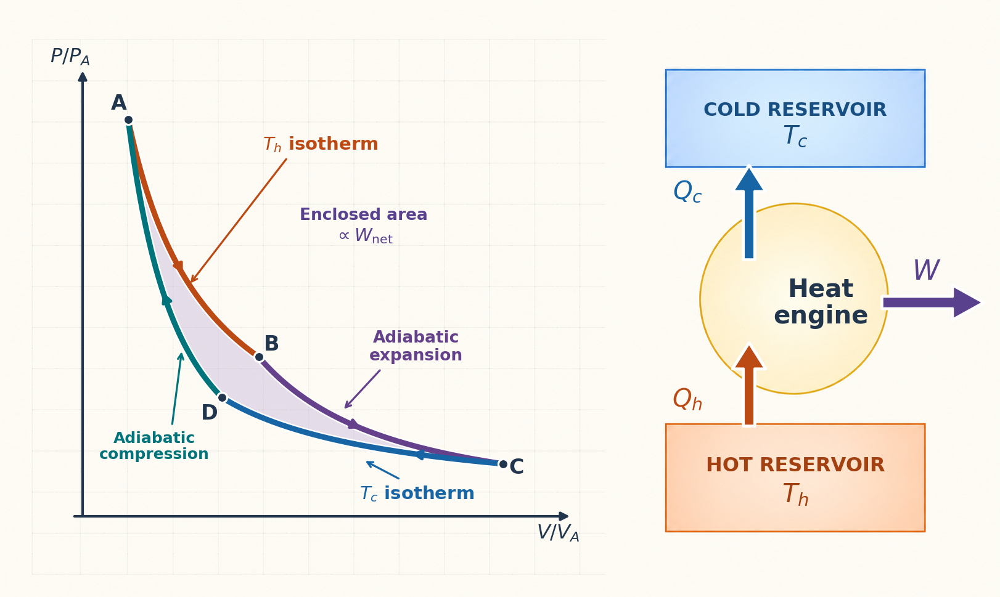
Fig. 14.17 The Carnot cycle and energy flow in an ideal heat engine. (a) The clockwise cycle ABCDA consists of two isothermal processes (AB and CD) and two adiabatic processes (BC and DA). The shaded area is proportional to the net work produced, since the axes are normalized. (b) Heat \(Q_{\rm h}\) enters from the hot reservoir below, some is converted into work \(W\), and the remaining heat \(Q_{\rm c}\) is transferred to the cold reservoir above. Adapted from OpenStax, College Physics 2e, Figure 15.21.#
14.4.1. Heat Pumps#
The great advantage of using a heat pump to keep your home warm is that a heat pump supplies \(Q_{h} = Q_{\rm c} + W\) rather than just burning fuel. Heat transfer is from the outside air to the indoor space. You only pay for \(W\) and you get an additional heat transfer of \(Q_{\rm c}\) from the outside at no cost. In many cases, more energy (\({\sim}2\times\)) is transferred to the heated space as is used to run the heat pump. When you burn fuel to keep warm, you pay for all of it. The disadvantage is that the work input is sometimes more expensive than simply burning fuel, especially if the work is done by electrical energy.
![Three-panel illustration of heat-pump operation. Panel (a) shows a counterclockwise Carnot cycle with two isothermal and two adiabatic processes, where the shaded area represents the magnitude of work input. Panel (b) shows work entering a heat pump from the right, with heat transferred downward from the cold reservoir to the hot reservoir. Panel (c) shows a realistic heat pump with an outdoor evaporator, expansion valve, compressor, and indoor condenser. Blue arrows indicate heat absorbed outdoors, orange arrows indicate heat released indoors, and purple arrows indicate work input.](../_images/heat_pump_three_panel_final.png)
Fig. 14.18 The reversed Carnot cycle and heat-pump operation. (a) A Carnot cycle operating counterclockwise (ADCBA) requires net work input, whose magnitude is proportional to the shaded area on the normalized \(PV\) diagram. (b) A heat pump uses external work \(W_{\rm in}\) to transfer heat \(Q_{\rm c}\) from a cold reservoir to a hot reservoir, delivering \(Q_{\rm h}=Q_{\rm c}+W_{\rm in}\). (c) In a practical heat pump, the outdoor evaporator absorbs heat, the compressor raises the refrigerant’s pressure and temperature, and the indoor condenser releases heat. The expansion valve reduces the refrigerant’s pressure before it returns to the evaporator. Adapted from OpenStax, College Physics 2e, Figures 15.26 and 15.27.#
The basic components of a heat pump need a working fluid (e.g., a non-CFC refrigerant). In the outdoor coils (i.e., the evaporator), heat transfer \(Q_{\rm c}\) occurs to the working fluid from the cold outdoor air, turning it into a gas. The electric compressor (i.e., work input \(W\)) raises the temperature and pressure of the gas and forces it into the condenser coils that are inside the heated space.
Because the temperature of the gas is higher than the temperature inside the room, heat transfer to the room occurs and the gas condenses to a liquid. The liquid then flows back through a pressure-reducing valve to the outdoor evaporator coils, being cooled through expansion.
The quality of a heat pump is judged by how much heat transfer \(Q_{\rm h}\) occurs into the warm space compared with how much work input \(W\) is required. We define a heat pump’s coefficient of performance \(COP_{\rm hp}\) as
Recall that the efficiency of a heat engine is \(\eta = W/Q_{\rm h}\), which means that \(COP_{\rm hp} = 1/\eta\).
Since the efficiency of a heat engine is less than 1, then the \(COP_{\rm hp} >1.\) A heat pump always has more heat transfer \(Q_{\rm h}\) than work put into it.
Heat pumps work best when the temperature differences are small. Heat pumps do not work as well in very cold climates as they do in more moderate climates.
Friction and other irreversible processes reduce heat engine efficiency, but they do not benefit the operation of a heat pump. They reduce the work input by converting part of it to heat transfer back into the cold reservoir before it gets into the heat pump.
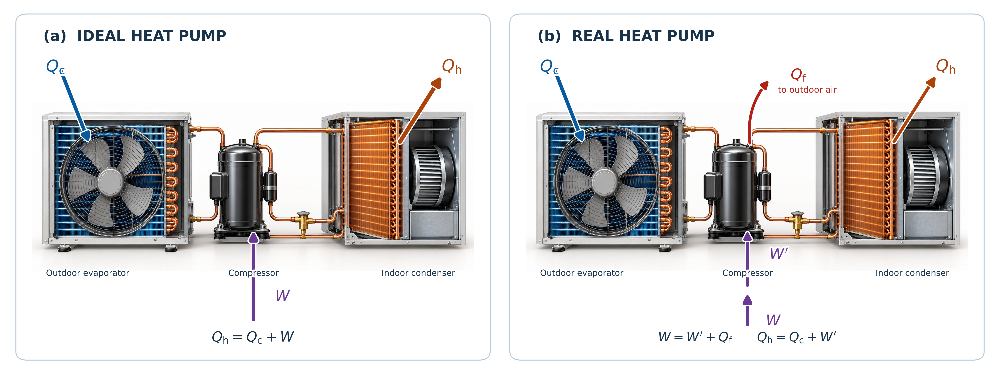
Fig. 14.19 Energy losses in a real heat pump. (a) An ideal heat pump uses all the input work \(W\) to transfer heat from the cold surroundings to the heated space. (b) In a real heat pump, some work is dissipated as heat \(Q_{\rm f}\) to the surroundings, leaving \(W'=W-Q_{\rm f}\) for useful heat pumping. This reduces the heat delivered indoors for the same input work. Adapted from OpenStax, College Physics 2e, Figure 15.28.#
Real heat pumps do not perform quite as well as an ideal one. Their \(COP_{\rm hp}\) values range from \(2-4\), where this range means that the heat transfer \(Q_{\rm h}\) from the heat pumps is that much greater than the work \(W\) put into them.
The economic feasibility of a heat pump is limited since \(W\) is usually supplied by electrical energy that costs more per joule than heat transfer by burning fuels. The initial cost of a heat pump is greater than that of many furnaces, so that it takes longer for the costs to be recovered. Heat pumps are most likely economically viable in regions with mild winter climates, with relatively cheap electricity, and when other fuels are relatively expensive.
14.4.2. Air Conditioners and Refrigerators#
Air conditioners and refrigerators are designed to cool something down in a warm environment. Work input \(W\) is required for heat transfer from cold to hot, which is expensive. The quality of an air conditioner or refrigerator is based on its coefficient of performance \(COP_{\rm ref}\) that depends on how much heat transfer \(Q_{\rm c}\) occurs from a cold environment, or
An air conditioner will have a lower coefficient of performance than a heat pump because \(Q_{\rm h}>Q_{\rm c}\). Real air conditioners and refrigerators have \(COP_{\rm ref}\) values ranging from \(2-6\).
A type of \(COP\) rating system called the “energy efficiency rating” (EER) was developed. This rating makes it easier for the consumer (in Australia, Canada, New Zealand, and the US) to use an Energy Star Rating (out of 5 stars), where 5 stars is the most energy efficient. The EER of an air conditioner or refrigerator can be expressed as
where \(Q_{\rm c}\) is the amount of heat transfer from a cold environment in British thermal units (BTUs), \(t_1\) is time measured in hours, \(W\) is the work input in joules, and \(t_2\) is the time in seconds.
14.4.3. Example Problem: Carnot Limit for a Nuclear Power Plant#
Example Problem: Carnot Limit for a Nuclear Power Plant
The Problem
Consider an illustrative pressurized-water nuclear power plant with hot-side water at \(300^\circ{\rm C}\) and steam condensing at \(27^\circ{\rm C}\). Treat these as the temperatures of two ideal reservoirs. Find the maximum theoretical efficiency of a heat engine operating between them. The temperatures are specified to the nearest degree; they are not universal limits for all reactor designs.
Fig. 14.20 Heat flow through a nuclear power plant. The reactor supplies thermal energy through a steam generator, the turbines deliver work, and the condenser rejects heat. The example idealizes this multistage process using two reservoir temperatures. Source: OpenStax, College Physics 2e, Figure 15.22.#
Show worked solution
The Model
We seek a theoretical upper bound, so we compare the plant with a reversible Carnot engine between the specified reservoirs. The calculation requires absolute temperatures rather than Celsius temperature ratios. Real heat exchangers, turbines, pumps, and electrical equipment introduce losses, so the actual electrical efficiency will be lower than this ideal bound.
The Math
The Carnot efficiency depends only on the ratio of the cold and hot absolute temperatures,
The Celsius-to-kelvin conversion adds the exact offset \(273.15\) to each Celsius reading. The two reservoir temperatures are approximately \(T_{\rm h}=573\ {\rm K}\) and \(T_{\rm c}=300\ {\rm K}\), so the maximum efficiency is
The Conclusion
The ideal upper bound is \(47.6\%\), or about \(48\%\). This is reasonable because the cold reservoir remains well above absolute zero, so even a reversible engine must reject substantial heat. The result is a Carnot limit for the specified temperatures, not a measured nuclear-plant efficiency or a capacity factor.
Adapted from OpenStax, College Physics 2e, Example 15.4.
14.4.4. Example Problem: Maximum Heating Coefficient of Performance#
Example Problem: Maximum Heating Coefficient of Performance
The Problem
A heat pump operates between a hot reservoir at \(45.0^\circ{\rm C}\) and a cold reservoir at \(-15.0^\circ{\rm C}\). Determine the largest possible heating coefficient of performance. The working fluid must be warmer than the indoor air when releasing heat and colder than the outdoor air when absorbing heat.
Fig. 14.21 Temperature differences drive heat transfer. The working fluid must be colder than the outdoor air to absorb heat and warmer than the indoor air to release it. The ideal heating output includes both absorbed heat and input work. Source: OpenStax, College Physics 2e, Figure 15.29.#
Show worked solution
The Model
We model the best possible device as a reversed Carnot cycle. Its useful output is the heat delivered to the warm reservoir, while its input is the work supplied to run the pump. Conservation of energy includes both the absorbed outdoor heat and the work input. We use the reversible heat-transfer ratio to express the heating coefficient of performance in terms of absolute temperatures.
The Math
The heating coefficient of performance compares delivered heat with input work. The cycle’s energy balance gives \(W_{\rm in}=Q_{\rm h}-Q_{\rm c}\), which yields
For a reversed Carnot cycle, \(Q_{\rm c}/Q_{\rm h}=T_{\rm c}/T_{\rm h}\). Substituting that reversible relation before inserting numbers gives
The absolute hot-side temperature is \(318.2\ {\rm K}\), and the reservoir temperature difference is \(60.0\ {\rm K}\). Keeping the exact conversion internally and rounding the final result to three significant figures gives
The Conclusion
The maximum heating coefficient of performance is \(5.30\). For each joule of input work, the ideal pump can deliver \(5.30\ {\rm J}\) indoors, with the balance supplied by heat absorbed outdoors. A value above one therefore conserves energy; it measures heat moved per unit work rather than heat converted entirely into work. A real pump operating under these conditions has a lower coefficient of performance.
Adapted from OpenStax, College Physics 2e, Example 15.5.
14.5. Entropy and the Second Law of Thermodynamics#
There is another way of expressing the second law of thermodynamics, which uses a concept called entropy. The entropy relates the tendency in nature for systems to become disordered and for less energy to be available for use as work.
From our discussion of the Carnot engine (and any reversible process), we have
which depends on the absolute values of the heat transfer (\(Q_{\rm c}\) and \(Q_{\rm h}\)) at temperatures \(T_{\rm c}\) and \(T_{\rm h}\), respectively. The ratio of heat transfer to the temperature is defined as the change in entropy \(\Delta S\) for a reversible process, or
where \(Q\) is the heat transfer (positive for transfer into and negative for out of) and \(T\) is the absolute temperature (in kelvins) at which the reversible process takes place. The SI unit for entropy is \(\rm J/K\). If temperature changes in the process, then it is usually a good approximation to take \(T\) as the average temperature.
The definition of \(\Delta S\) is strictly valid only for reversible processes (e.g., a Carnot engine). We can find \(\Delta S\) precisely even for real, irreversible processes. The entropy \(S\) of a system depends only on the state of the system and not how it reached that condition. Entropy is a property of the state. The change in entropy \(\Delta S\) of a system between two states \(S_1\) and \(S_2\) is the same no matter how the change occurs.
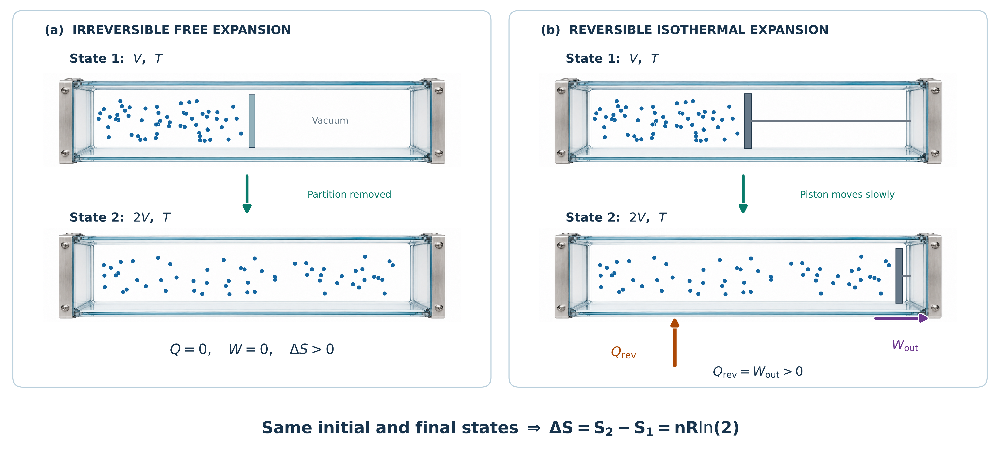
Fig. 14.22 Entropy is a state function. (a) During irreversible free expansion, the gas occupies a larger volume without heat transfer or work. (b) During reversible isothermal expansion, the gas absorbs heat and performs work. Both processes have the same initial and final states, so their entropy changes are identical: \(\Delta S=nR\ln 2\). Adapted from OpenStax, College Physics 2e, Figure 15.32.#
Consider the change in entropy of a Carnot engine and its heat reservoirs for one full cycle.
The hot reservoir has a loss of entropy \(\Delta S_{\rm h} = -Q_{\rm h}/T_{\rm h}\) because heat transfer occurs out of it.
The cold reservoir has a gain of entropy \(\Delta S_{\rm c} = Q_{\rm c}/T_{\rm c}\) because heat transfer occurs into it.
The total change in entropy is
Since we know that \(Q_{\rm h}/T_{\rm h} = Q_{\rm c}/T_{\rm c}\) for a Carnot engine, we have the total change in entropy as
The total change in entropy for a system in any reversible process is zero.
The entropy of various parts of the system may change, but the total change is zero. The system does not affect the entropy of its surroundings since heat transfer does not occur between the system and the surroundings. Real processes are not reversible, where they do change the total entropy.
It is reasonable that entropy increases for heat transfer from hot to cold. Since the change in entropy is \(Q/T\), there is a larger change at lower temperatures. The decrease in entropy of the hot object is less than the increase in entropy of the cold object, which produces an overall increase. There is an increase in entropy for any system undergoing an irreversible process.
There are only two possibilities:
entropy is constant for a reversible process, or
entropy increases for an irreversible process.
The total entropy of a system either increases or remains constant; it never decreases.
Heat transfer cannot occur spontaneously from cold to hot because entropy would decrease.
Entropy is different than energy. Entropy is not conserved but increases in all real processes. Reversible processes allow for the most heat transfer to be used for work and are also the ones that keep entropy constant.
14.5.2. Order to Disorder#
Entropy is related not only to the unavailability of energy to do work; it is also a measure of disorder. Melting a block of ice means taking a highly structured and orderly system of water molecules and converting it into a disorderly liquid in which the molecules have no fixed positions. There is a large increase in entropy in the process.
Suppose we mix equal masses of water originally at two different temperatures (e.g., \(20^\circ{\rm C}\) and \(40^\circ{\rm C}\)). The result is water at an intermediate temperature of \(30^\circ{\rm C}\). Three outcomes have resulted:
entropy has increased,
Entropy has increased because mixing two bodies of water has the same effect as heat transfer from the hot and cold one. The mixing decreases the entropy of the hot one and increases it for the cold one by a greater amount.
some energy has become unavailable to do work, and
Once the two masses have mixed, there is only one temperature. You cannot run a heat engine with them.
the system has become less orderly.
The mixture is less orderly, or less structured. Instead of having two masses at different temperatures (and different distributions of molecular speeds), we now have a single mass with a uniform temperature.
14.5.3. Life, Evolution, and the Second Law of Thermodynamics#
Some people misunderstand and say that the process of evolution violates the second law of thermodynamics. Over time, simple organisms evolved to more complex ones representing a large decrease in entropy of the Earth’s biosphere. The complex organisms are more highly structured, and have a lower entropy than the substances from which they grow. But it is always possible for the entropy of one part of the universe to decrease. In equation form, we can write this as
Thus \(\Delta S_{\rm sys}\) can be negative as long as \(\Delta S_{\rm env}\) is positive and greater in magnitude.
How is it possible for a system to decrease its entropy?
Energy transfer is necessary. If you pick up marbles that are scattered about the room and put them into a cup, your work has decreased the entropy of the system. Energy from the Sun can decrease the entropy of local systems on Earth (i.e., \(\Delta S_{\rm sys}<0\)). But the overall entropy of the rest of the universe increases by a greater amount (i.e., \(\Delta S_{\rm env}>0\) and \(|\Delta S_{\rm env}|>|\Delta S_{\rm sys}|\)).
The Earth can be viewed as a heat engine operating between a hot reservoir supplied by the Sun and cold reservoir supplied by outer space. There is a large total increase in entropy resulting from this massive heat transfer. A small part of this heat transfer is stored in structured systems on Earth, producing much smaller local decreases in entropy.
14.5.4. Example Problem: Entropy from Heat Flow Between Reservoirs#
Example Problem: Entropy from Heat Flow Between Reservoirs
The Problem
A quantity of heat \(Q=4.0\times10^3\ {\rm J}\) flows directly from a reservoir at \(6.0\times10^2\ {\rm K}\) to a reservoir at \(2.5\times10^2\ {\rm K}\). Neither reservoir changes temperature. Find the total entropy change of the two reservoirs.
Show worked solution
The Model
We take both reservoirs together as the system. The direct transfer is irreversible, but entropy is a state function, so we can calculate each reservoir’s entropy change using an imagined reversible transfer at that reservoir’s fixed temperature. The hot reservoir loses heat and entropy, while the cold reservoir gains them. Adding the signed changes determines whether the total agrees with the second law.
The Math
A reversible transfer at constant temperature changes entropy by the signed heat transfer divided by the absolute temperature. Using \(Q\) for the positive magnitude of the energy transferred gives
Adding these changes before substituting values gives
The reservoir temperatures then determine the total change as
Fig. 14.23 A reversible reference path for an irreversible transfer. Separate reversible transfers reproduce the reservoirs’ endpoint changes, allowing their entropy changes to be calculated even though the actual heat flow is irreversible. Source: OpenStax, College Physics 2e, Figure 15.33.#
The Conclusion
The total entropy increases by \(9.3\ {\rm J/K}\). The cold reservoir gains more entropy per joule than the hot reservoir loses, so the positive result agrees with spontaneous heat flow from hot to cold. The two reservoirs exchange equal amounts of energy even though their entropy changes do not cancel.
Adapted from OpenStax, College Physics 2e, Example 15.6.
14.5.5. Example Problem: Lost Work After Irreversible Heat Transfer#
Example Problem: Lost Work After Irreversible Heat Transfer
The Problem
(a) Find the work produced by a Carnot engine that receives \(4.0\times10^3\ {\rm J}\) from a reservoir at \(6.0\times10^2\ {\rm K}\) and rejects heat to one at \(1.0\times10^2\ {\rm K}\). (b) Suppose the same heat first flows without doing work from the \(6.0\times10^2\ {\rm K}\) reservoir to one at \(2.5\times10^2\ {\rm K}\). It then enters a Carnot engine operating between \(2.5\times10^2\ {\rm K}\) and \(1.0\times10^2\ {\rm K}\). Find the work output and compare it with part (a).
Show worked solution
The Model
We compare two reversible engines receiving the same amount of heat and rejecting heat to the same cold reservoir. In the second arrangement, the preliminary direct heat transfer is irreversible and lowers the temperature at which the energy becomes available to the engine. Multiplying the heat input by the appropriate Carnot efficiency gives each work output. We expect the preliminary transfer to reduce the useful work even though it does not destroy energy.
The Math
The work delivered by a Carnot engine is its heat input multiplied by its efficiency. If \(T_{\rm h}\) is the original hot temperature, \(T_{\rm m}\) is the intermediate temperature, and \(T_{\rm c}\) is the cold temperature, the two arrangements give
Subtracting the expressions before rounding gives the work opportunity lost during the preliminary transfer,
(a) The original reservoir temperatures give the work output
(b) The lower hot-side temperature gives the work output
Using the unrounded expressions for the comparison gives
Fig. 14.24 The same energy input can provide different work outputs. The preliminary transfer lowers the temperature of the heat supplied to the second engine. The original diagram displays extra calculation digits; the answers here are rounded to two significant figures. Source: OpenStax, College Physics 2e, Figure 15.34.#
The Conclusion
The work output falls from \(3.3\times10^3\ {\rm J}\) to \(2.4\times10^3\ {\rm J}\), a loss of \(9.3\times10^2\ {\rm J}\) of potential work. Both outputs are below the heat input, and the lower hot-side temperature gives the smaller output, as expected. The lost opportunity equals the cold-reservoir temperature times the entropy generated in the preliminary transfer; the energy itself is conserved.
Adapted from OpenStax, College Physics 2e, Example 15.7.
14.5.6. Example Problem: Entropy Change When Ice Melts#
Example Problem: Entropy Change When Ice Melts
The Problem
Find the entropy increase when \(1.00\ {\rm kg}\) of ice at \(0^\circ{\rm C}\) melts completely to water at the same temperature. Use the latent heat of fusion \(L_f=334\ {\rm kJ/kg}\) at standard atmospheric pressure.
Show worked solution
The Model
The ice and resulting water are the system. Melting absorbs latent heat without changing the temperature, so we can imagine a reversible phase change at the melting point to determine the entropy change. The mass and latent heat give the required energy transfer. Dividing that transfer by the absolute melting temperature gives the entropy increase.
The Math
The heat absorbed during melting is \(Q=mL_f\). Because the reversible reference process takes place at constant temperature, the entropy change is
The melting temperature is approximately \(273\ {\rm K}\), and \(334\ {\rm kJ/kg}=3.34\times10^5\ {\rm J/kg}\). Substituting these values gives
The Conclusion
The water’s entropy increases by \(1.22\times10^3\ {\rm J/K}\). The positive sign is consistent with heat entering the system and the loss of the ice crystal’s fixed molecular arrangement. A constant temperature does not require a constant entropy: latent heat changes the phase rather than raising the temperature.
Adapted from OpenStax, College Physics 2e, Example 15.8.
14.6. In-Class Exercises#
14.6.1. Instructions#
You will use the final 20 minutes of class to begin the problems assigned for that class day. First, you must make a serious attempt on each assigned problem independently. After developing your own approach, you may compare ideas and discuss the problems with other students.
Each student must prepare and submit an individual solution. Organize each quantitative solution using the Problem–Model–Math–Conclusion format. Show your reasoning, equations, substitutions with units, and interpretation of the result. A numerical answer without supporting work is not a complete solution.
Open this page in Google Colab so you can easily copy the problems to the template without retyping them.
Export your completed Jupyter notebook as a PDF and submit the PDF to D2L by 11:59 p.m. CT on the day of class. The PDF filename must follow the format LastName_ChXX_SetY.pdf, where XX is the two-digit chapter number and Y is the problem-set number.
Make your own copy before beginning
A read-only Jupyter notebook template is available on D2L. Before entering any work, you must make your own editable copy of the notebook by selecting Save a copy in Drive.
Changes made directly to the read-only template cannot be saved. It does not matter how much work you enter: if you have not made your own copy, your changes will be lost. Confirm that you can rename and save your copy before beginning the problems.
14.6.2. Problems#
Problem 1
Suppose a woman does \(500\ {\rm J}\) of work and \(9500\ {\rm J}\) of heat transfer occurs into the environment in the process. (a) What is the decrease in her internal energy, assuming no change in temperature or consumption of food? (That is, there is no other energy transfer.) (b) What is her efficiency?
Problem 2
A car tire contains \(0.0380\ {\rm m^3}\) of nitrogen at a gauge pressure of \(2.20 \times 10^5\ {\rm N/m^2}\) (about 32 psi). How much more internal energy does this gas have than the same volume at zero gauge pressure (normal atmospheric pressure)? Use \(E_{\rm int}=\frac{5}{2}NkT\) for the internal energy of nitrogen, a diatomic gas.
Problem 3
With \(2.56 \times 10^6\ {\rm J}\) of heat transfer into an engine, a given cyclical heat engine can do only \(1.50 \times 10^5\ {\rm J}\) of work. (a) What is the engine’s efficiency? (b) How much heat transfer to the environment takes place?
Problem 4
A certain gasoline engine has an efficiency of \(30.0\%\). What would the hot reservoir temperature be for a Carnot engine having that efficiency, if it operates with a cold reservoir temperature of \(200^\circ{\rm C}\)?
Problem 5
What is the coefficient of performance of an ideal heat pump that transfers heat from a cold reservoir at \(-25.0^\circ{\rm C}\) to a hot reservoir at \(40.0^\circ{\rm C}\)?
Problem 6
On a hot summer day, \(4.00 \times 10^6\ {\rm J}\) of heat transfer into a parked car increases its temperature from \(35.0^\circ{\rm C}\) to \(45.0^\circ{\rm C}\). What is the increase in entropy of the car due to this heat transfer alone?
14.7. Homework#
14.7.1. Instructions#
Homework assignment
The homework is designed to give you regular practice applying the ideas developed in this chapter. A read-only Jupyter notebook template for the assignment is available on D2L. Before entering any work, you must make your own editable copy of the notebook. Changes made directly to the read-only template cannot be saved, so confirm that you can rename and save your copy before beginning.
There are two types of homework questions:
Conceptual questions: Copy the question into your notebook and answer it under a heading titled The Conclusion. Your response should be a paragraph that directly answers the question and explains the physical reasoning behind your answer. A Model or Math section is not required unless the question genuinely requires a calculation.
Quantitative questions: Copy the problem into your notebook and organize your solution using the Problem–Model–Math–Conclusion format. Identify the physical situation, assumptions, knowns, unknowns, and sign convention in the Model; develop and apply the necessary equations in the Math; and state, interpret, and check your result in the Conclusion. Include units in numerical substitutions.
The worked examples on the course webpage model the reasoning and solution style expected in your homework.
Don’t wait until the night it is due
Homework is much easier to manage when you complete a couple of problems at a time as you work through the chapter. This gives you time to identify concepts that you do not understand and ask questions before the due date. Trying to complete the entire assignment the night it is due usually leaves little time to diagnose mistakes or revisit the course material.
Submission
When your assignment is complete, export the Jupyter notebook as a PDF and submit the PDF to D2L by 11:59 p.m. CT on the due date.
Name your submitted file using the format LastName_ChXX_HW.pdf. Replace LastName with your last name and XX with the two-digit chapter number. For example, homework for Chapter 2 submitted by Jane Smith would be Smith_Ch02_HW.pdf.
Before submitting, open the PDF and make sure that all questions, equations, figures, and solutions are visible and readable.
14.7.2. Conceptual Questions#
Problem 1
A great deal of effort, time, and money has been spent in the quest for the so-called perpetual-motion machine, which is defined as a hypothetical machine that operates or produces useful work indefinitely and/or a hypothetical machine that produces more work or energy than it consumes. Explain, in terms of heat engines and the first law of thermodynamics, why or why not such a machine is likely to be constructed.
Problem 2
Is a temperature difference necessary to operate a heat engine? State why or why not.
14.7.3. Quantitative Questions#
Problem 3
(a) How long will the energy in a \(1470\ {\rm kJ}\) (\(350\ {\rm kcal}\)) cup of yogurt last in a woman doing work at the rate of \(150\ {\rm W}\) with an efficiency of \(20.0\%\) (such as in leisurely climbing stairs)?
(b) Does the time found in part (a) imply that it is easy to consume more food energy than you can reasonably expect to work off with exercise?
Problem 4
(a) What is the efficiency of a cyclical heat engine in which \(75.0\ {\rm kJ}\) of heat transfer occurs to the environment for every \(95.0\ {\rm kJ}\) of heat transfer into the engine?
(b) How much work does it produce for \(100\ {\rm kJ}\) of heat transfer into the engine?
Problem 5
(a) What is the hot reservoir temperature of a Carnot engine that has an efficiency of \(42.0\%\) and a cold reservoir temperature of \(27.0^\circ{\rm C}\)?
(b) What must the hot reservoir temperature be for a real heat engine that achieves \(0.700\) of the maximum efficiency, but still has an efficiency of \(42.0\%\) (and a cold reservoir at \(27.0^\circ{\rm C}\))?
(c) Does your answer imply practical limits to the efficiency of car gasoline engines?
Problem 6
A hot rock ejected from a volcano’s lava fountain cools from \(1100^\circ{\rm C}\) to \(40.0^\circ{\rm C}\), and its entropy decreases by \(950\ {\rm J/K}\). How much heat transfer occurs from the rock?